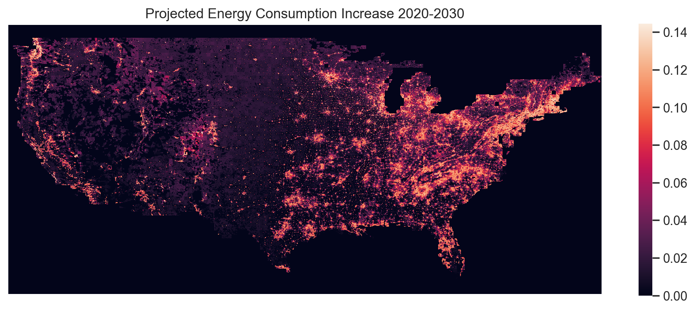

Hi! I'm Neal!
I love nature and the environment and I want to do what I can to help preserve it. I fill my time with cooking, coding, photography, and frisbee, so you'll see a mix of that stuff throughout here as well as some academic projects I've worked on. If you want to work together or have any interesting work you would like to share, feel free to reach out through my email (nam2252 [at] columbia [dot] edu) or through my LinkedIn! :)
Here are also some projects that I've worked on recently! You can find other projects in my GitHub.
Columbia University: September 2023 - December 2023
This project was an analysis of hospital waste stream completed as a final project for EAEE E4011 - Industrial Ecology of Manufacturing. I worked as part of a team of 4 students to analyze cost and emissions impacts of hospital waste streams. I specifically built the Python software and simulation to carry out the Life Cycle Assessment (LCA) of hospital waste streams and model the impacts of different policies/program. Associated code can be found here and project report can be made available upon request.
Columbia University: September 2023 - December 2023
I built this model for EAEE E4000 - Machine Learning for Environmental Engineering. This model integrates a range of environmental and socioeconomic data to project how energy demand from residential air conditioning systems will change in the United States through 2030. Associated code can be found here and project report can be made available upon request.
Yale University: September 2022 - May 2023
As a part of the Department of Energy's Innaugural Hydropower Collegiate Competition, I worked on a team of 6 students to prepare a case study on Rocky River Hydropower Plant in New Milford, Connecticut. I specifically worked on modeling hydrological factors in different future scenarios along with integrating floating solar-PV units into the powerplant to show economic and energy production outputs. We won first place for the outreach portion of our project and second place overall. The case study can be made available upon request.
National Renewable Energy Laboratory: May 2022 - August 2022
I worked in the Building Energy Science group at the National Renewable Energy Laboratory as a Science Undergradute Laboratory Intern. I worked specifically on developing a multiphysics model in COMSOL to simulate the purification of molten salts in an electrochemical flow cell, a process important to developing long-term concentrated solar power. This model is used to rapidly test and determine optimal cell parameters for a final purification cell.
Air Force Research Laboratory: May 2021 - August 2021
Working under the Department of Energy and with Air Force Research Laboratory, I performed a comparative analysis of different machine learning algorithms for classifying and quantifying gasses within certain natural gas mixtures. I published my results here in February 2023